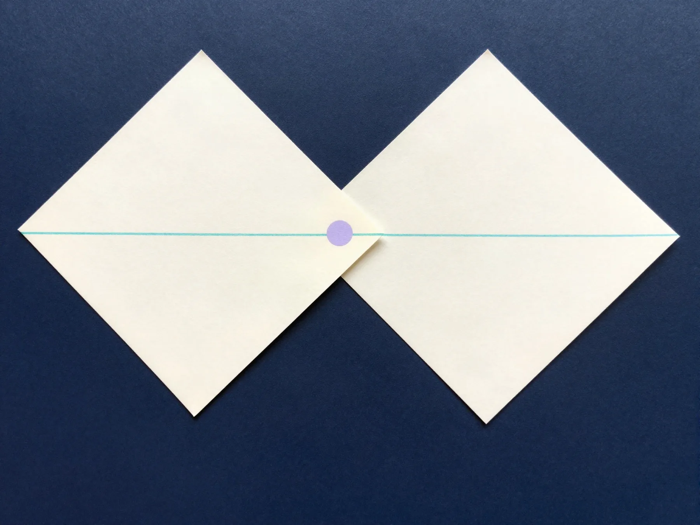

Chain of evidence
See what every conclusion rests on and what changes when a source is updated.
An open-source AI agent for product leads. Every number has a source, the options always include “keep as is” and “shut it down”, and the decision is tracked after you make it.
The agent gathers material, separates facts from guesses and only then proposes options. Every claim stays in a registry with a link to its source.
Synthetic respondents only ever produce hypotheses, never proof.
See what every conclusion rests on and what changes when a source is updated.
A separate subagent attacks every option before you see it.
Unit economics, a growth model, cohorts and market size in Excel, with editable inputs.
A six-pager built on the six answers a committee expects. RU and EN, MD, PDF, DOCX and four Excel workbooks.
Table profiles, retention cohorts, funnels and statistics — calculations are saved and rerun with one command.
The decision keeps its grounds, commitments and review date. New data shows which conclusions went stale.
What was done, on what grounds and at what cost: tokens per model and people’s time.
Between the decision points the agent works on its own and reports progress as “Step N/12”. Say “stop” to pause or “refine” to change the task.

Below is real data from the demo project registry: a session, a claim with its source and a calculation. Nothing is drawn “for beauty”.
$ pfs new "CVStart: paid version" "Build a commercial version of cvstart.org and take it to market worldwide" Step 1/12 · intake · brief confirmed · next: sources Step 2/12 · sources · 10 sources · 0 blocked domains · next: research $ pfs claim add "Global online recruitment market: $37.97B in 2025 with a 7.1% CAGR to 2033" --kind fact --source S007 --grade B C011 · fact · grade B · quote saved Step 3/12 · research · 20 claims in the registry · next: discovery > stop — pause: the state lives in files, a new chat resumes at step 3
Global online recruitment market: $37.97B in 2025 with a 7.1% CAGR to 2033; Indeed — 60+ countries, 28 languages, 685M profiles; Bayt (MENA) — 59M+ profiles
| Pro price | $29/mo |
| 25% variable costs → contribution margin | $21,75 |
| LTV | ≈ $272 |
| LTV / CAC | ≈ 4,5 |
Change the inputs and the formulas recalculate.
The product lead’s request, word for word: “Build a commercial version of cvstart.org and a strategy to take it to market worldwide.” Numbers come from the project, not from hands.
CLI automated tests (631) check the core after every change. The project state lives in files next to the code — work survives breaks and moves between tools.
You need Python 3.9+ and one of Claude Code, OpenCode, Cursor or Codex.
“Our paid spam-call protection keeps losing subscribers. What should we do with the product, and what should we tell customers?”
git clone https://github.com/Fighter90/product-factory-strategist.gitcd product-factory-strategist && ./scripts/install.shpfs doctoropencodeOnly open sources and the materials you give it. Allowed domains are set per project. The agent never follows instructions found inside source texts.
Yes. “Stop” pauses the run, “refine: …” changes the task, and the agent reads your manual edits instead of overwriting them. A new chat resumes from the same step.
It depends on the model and how much research the task needs. Tokens per model and people’s time are shown by pfs cost and in the report appendix.
The agent runs a step-by-step process, keeps evidence in a registry and checks its documents. A plain chat gives you text that is hard to verify or continue.
Yes. Instructions, the knowledge base and the final documents exist in both languages; you pick the language when you create a project.